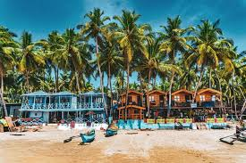
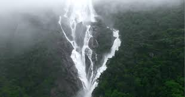

Baga Beach

One of the most popular and lively beaches, known for its water sports, shacks, nightlife, and proximity to other famous beaches like Calangute and Anjuna.
Old Goa(Velha Goa)
A UNESCO World Heritage Site featuring magnificent churches and cathedrals from the Portuguese colonial era, most notably the Basilica of Bom Jesus which holds the relics of St. Francis Xavier.
Fort Aguada

A well-preserved 17th-century Portuguese fort and lighthouse overlooking the Arabian Sea, offering panoramic views of the coast and the Mandovi River.
Palolem Beach

A crescent-shaped beach in South Goa known for its tranquil waters, pristine sands, and "silent noise" parties.
Dudhsagar Falls

A spectacular four-tiered waterfall on the Mandovi River, located deep inside the Bhagwan Mahaveer Sanctuary, translating to "Sea of Milk" due to its white, frothy appearance.